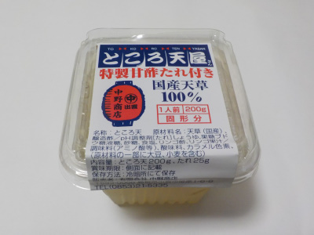

いいものを探そう ～出雲らへん～
島根県出雲市姫原町1-6-8
2022/07/30
中野商店の「ところ天屋さん特製天酢たれ付きところ天」を食べました。

暑くて食欲がないってことはないです。食べたかったので買いました。
このところ天はクセがなく食べやすかったです。特製天酢タレが濃い味で量が多かったです。
この商品は広島県の石井食品が製造して、中野商品が販売のようです。
【中野商店TOP】
【地域TOP】
【HPTOP】
【『姫原町らへん』の他の情報はこちら】
【おいしいものを食べよう。】【たくさん寝よう。】
【ソロ活をしよう!】【季節感のあることをしよう。】【動画視聴はほどほどに。】【当サイトの全てのコンテンツは無断転載禁止です。】